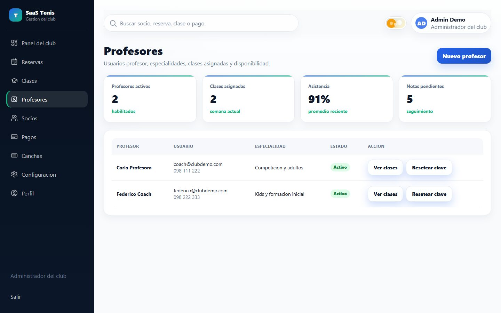
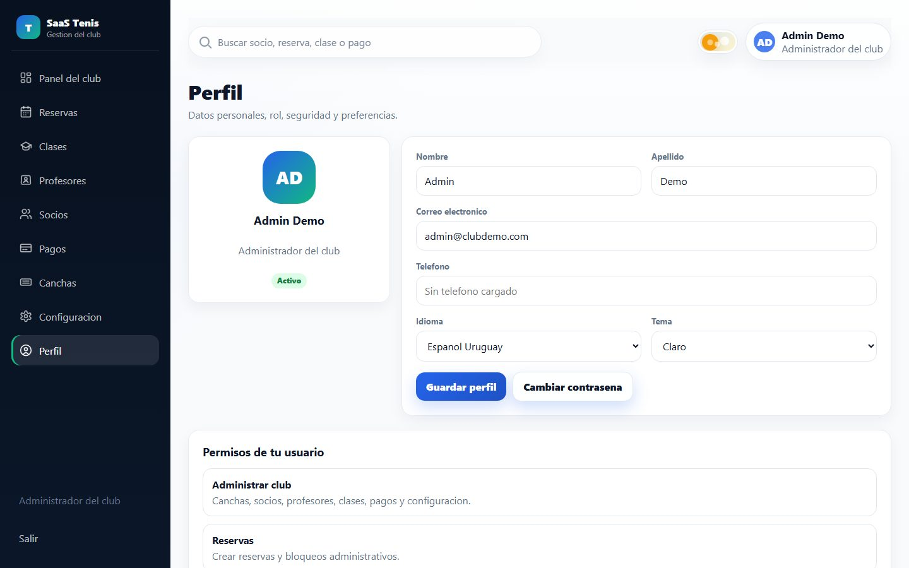

T
Tenis ClubManual de capacitacion
Tutorial para operar el sistema del club.
Guia paso a paso para administradores, profesores y socios. Las capturas usan datos ficticios para practicar sin tocar informacion real.
AdminSociosProfesoresMobile
Caso de ejemplo: Club Top Tenis. Usuario demo: Administrador del club. Los nombres, importes y horarios son ilustrativos.
01
T
Tenis ClubAntes de empezar
Acceso y roles
Entrar por el link del club y usar el rol correcto.
Cada club tiene su propia direccion con slug. Ejemplo: tenis-club.netlify.app/top-tenis/#/login
AdministradorGestiona reservas, socios, pagos, canchas, clases, profesores y reglas del club.
ProfesorConsulta sus clases, alumnos, cupos y asistencia. No cambia configuracion sensible.
SocioReserva cancha, se anota a clases, revisa pagos y edita su perfil.
SuperadminDa de alta clubes, revisa tenants y acompana soporte general.
Para capacitar, crear usuarios demo: Admin Demo, Profe Demo y Socio Demo. Asi se practica sin afectar datos reales.
02
Ingreso
1. Iniciar sesion en el club.
El login debe mostrar el club correspondiente. Si el nombre o colores no coinciden, revisar el slug de la URL.
1Abrir el link del clubEjemplo: /top-tenis/#/login.
2Ingresar email y contrasenaUsar el usuario demo del rol que se quiere practicar.
3Validar el rolEl menu lateral cambia segun admin, profesor o socio.
03
Administrador
2. Leer el panel del club.
El panel resume operacion diaria. Se usa al abrir el turno de administracion o para revisar el estado general.
1Socios activosRevisar cantidad de socios habilitados para operar.
2Pagos vencidosDetectar deuda antes de confirmar reservas o clases.
3Reservas hoyControlar la agenda diaria y posibles cambios.
04
Reservas
3. Gestionar una reserva desde administracion.
La agenda muestra fecha, cancha, turnos libres y ocupados. Se usa para crear, revisar o acompanar reservas del socio.
1Elegir fechaBuscar el dia solicitado por el socio.
2Elegir cancha y horarioLos turnos ocupados no deben permitir doble reserva.
3Confirmar jugadoresIndicar si hay socios o invitados no socios.
Ejemplo para practicar: reservar Cancha 1, jueves 18:00, partido dobles con 1 invitado no socio.
05
Socios
4. Dar de alta y revisar un socio.
El modulo de socios permite registrar personas, revisar estado, membresia, contacto y actividad asociada.
1Crear socioCargar nombre, email, telefono y datos basicos.
2Definir estadoActivo, pendiente o bloqueado segun reglas internas.
3Entregar accesoConfirmar usuario y contrasena temporal para el primer ingreso.
06
Pagos
5. Registrar pagos por motivo.
Los pagos se cargan separados por concepto: membresia, reserva, invitados de cancha u otros cargos.
1Seleccionar socioBuscar por nombre, apellido o email.
2Elegir motivoEjemplo: Membresia mensual o Invitados cancha.
3Registrar monto y metodoEfectivo, transferencia u otro metodo definido por el club.
Practica sugerida: cargar una membresia de $ 1.800 y un cargo de invitados de $ 300 para el Socio Demo.
07
Clases
6. Administrar clases, cupos y alumnos.
Las clases tienen nivel, profesor, cancha, horario, cupo y alumnos inscriptos o en espera.
1Crear o editar claseDefinir nombre, nivel, profesor, horario y cancha.
2Controlar cuposEvitar sobreinscripciones y usar lista de espera si corresponde.
3Revisar alumnosVer quienes estan activos, cancelados o esperando lugar.
08
Canchas y reglas
7. Configurar como opera el club.
Antes de salir en vivo hay que revisar canchas, limites, costos, idioma, tema y reglas de deuda.

CanchasAlta, nombre, superficie y disponibilidad.

ConfiguracionReglas de reserva, costos e idioma.

ProfesoresAlta de profes y asignacion a clases.

PerfilDatos del usuario y preferencias.
1Revisar costo de invitadosEjemplo ilustrativo: $ 300 por invitado no socio.
2Revisar deuda y bloqueoDefinir si un socio con deuda puede reservar o solo recibe alerta.
09
Socio mobile
8. Usar Mi panel como socio.
El socio ve su membresia, proximas actividades y pagos pendientes desde el celular.
Los valores del panel son demo. En produccion, proximas reservas y clases aparecen solo si existen datos reales para ese socio.
10
Confirmacion
10. Cargar socios e invitados en la reserva.
Al confirmar, se elige singles o dobles y se registran jugadores adicionales.
Ejemplo ilustrativo: 1 invitado no socio con costo $ 300. El costo real se configura por club.
12
Profesor
13. Revisar clases asignadas y alumnos.
El profesor usa su panel para ver agenda, cupos, alumnos y clases proximas.
1Entrar como profesorEl menu muestra solo herramientas necesarias para el rol.
2Revisar clasesValidar horario, nivel, cancha y alumnos inscriptos.
3Coordinar cambiosSi hay modificaciones, avisar a administracion para mantener el sistema al dia.
15
Superadmin
14. Crear o revisar clubes.
El superadmin administra tenants: nombre del club, slug, estado y usuarios iniciales.
1Crear tenantEjemplo: Top Tenis con slug top-tenis.
2Crear administradorAsignar email y acceso inicial al responsable del club.
3Probar linkEntrar a /top-tenis/#/login y validar que el club correcto aparece en pantalla.
16
Ejercicios de practica
Checklist para una capacitacion de 45 minutos.
Usar datos ficticios y confirmar que cada participante pueda completar el flujo de punta a punta.
Admin crea un socio demoNombre sugerido: Mauro Demo, email demo del club.
Admin registra un pagoMembresia mensual por $ 1.800, metodo efectivo.
Socio reserva una canchaPartido dobles con 1 invitado no socio.
Socio se anota a una claseValidar cupo y estado de inscripcion.
Profesor revisa su claseConfirmar alumnos y horario asignado.
Admin revisa el panelValidar que reservas y pagos se reflejen en la operacion.
17
T
Tenis ClubCierre de capacitacion
Despues de practicar, el club ya tiene un circuito de trabajo.
La clave es que todo quede cargado en el sistema: reservas, socios, pagos, clases y reglas. Si se vuelve a WhatsApp o planillas paralelas, se pierde trazabilidad.
Operacion diariaAbrir el panel, revisar reservas del dia y pagos pendientes.
SociosPromover que reserven y consulten pagos desde el link del club.
SoporteReportar dudas con usuario, rol, captura y paso donde ocurrio el problema.
ReservasPagosClasesSocios
18